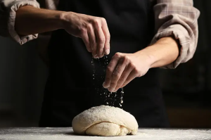
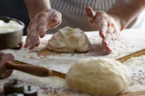

Company Background
We offer a complete range of quality ingredients, raw materials and mixes for bakery and pastries for major food production chains, restaurants, bakeries, hotels, retailers and individuals. To ensure the highest quality of our products, all our partners are scrupulously selected according to very high criteria. We offer an extensive range of readily available ingredients to satisfy all your culinary needs, wether traditional or industrial.
Our in-depth knowledge of the industry has been shaped by several years of experience. We put this expertise at your service by accompanying you in the development of your recipes with our ingredients until obtaining a perfect finished product. Our administrative team, consultants, sales representatives, as well as bakery and pastry demonstrators, are at your disposal whenever you need them.
“Creativity is just connecting things. When you ask creative people how they did something, they feel a little guilty because they didn’t really do it, they just saw something. It seemed obvious to them after a while.”
— John Doe - Co Founder
Our taste for excellence, our passion and the outstanding quality of our raw materials are key factors in the success of our products. Our hand-picked products have all been carefully tested in order to offer you the very best for your bakery and the making of your breads.
Pastry lovers have been treating hundreds of thousands of foodies throughout the region with culinary delights created with our ingredients. You will find in our wide range all the most essential ingredients used by the best chefs and artisans, to prepare all your gourmet recipes and your creative pastries.
Featured Products

Melaleuca chocolate bread, loved by the masses.
Categories
Customers Says
“If you really want to do something, You will find a way, If you don't you'll find an excure”
— John Doe - Co Founder